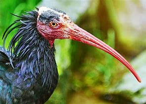
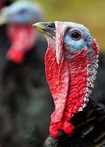
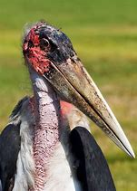
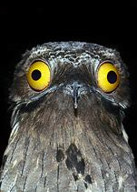
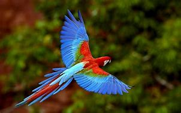
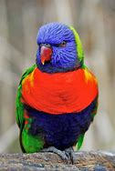
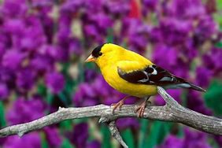
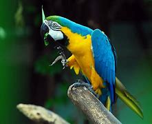

Birds
Home
Pictures
Articles
People
Bird sanctuary
Birds
These aerial animals do anything to survive
But they are slowly decreasing because violent human activities like throw garbage in water cutting of trees and others
Slide veiw

chicken

turkey

crane

owl

rio parrot

rio parrot 2

yellow finches bird

Blue and yellow mawcaw parrot
Rajganj bird sanctuary
Uppalapadu Bird sanctuary
Karnala bird sanctuary
Khijadia bird sanctuary